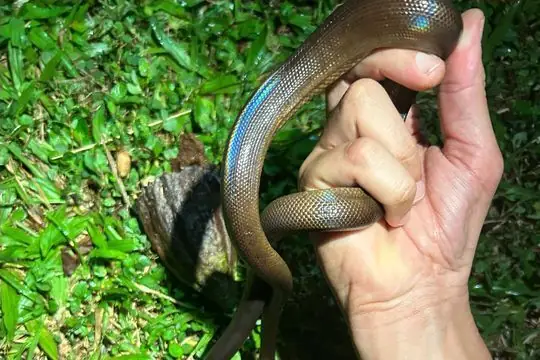
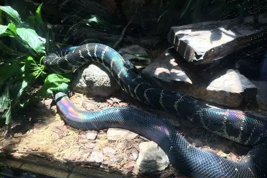
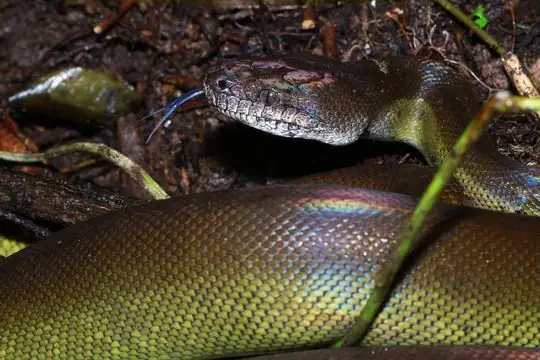

Pythonidae
The family Pythonidae (pythons) has 47 species in SnakeList (none venomous), in 11 genera.
- 47species
- 47non-venomous
- 11genera
About the family
Non-venomous constrictors of the Old World tropics: sub-Saharan Africa, tropical and subtropical Asia, and Australia, which has the greatest variety. The family includes some of the longest snakes on Earth.[1,2]
Unlike most boas, all pythons lay eggs, and the females usually stay with the clutch until it hatches.[1,2]
Sources for this introduction
- Pythonidae. Wikipedia.
- Pythons (Pythonidae). Grzimek's Animal Life Encyclopedia, via Encyclopedia.com.
Information last reviewed 9 November 2026.
Species
Showing 47 species
 African Rock PythonPython sebae
African Rock PythonPython sebae Angolan PythonPython anchietae
Angolan PythonPython anchietae Ball PythonPython regius
Ball PythonPython regius
Bismarck Ringed PythonBothrochilus boa
Black PythonSimalia boeleni Black-headed PythonAspidites melanocephalus
Black-headed PythonAspidites melanocephalus Blood PythonPython brongersmai
Blood PythonPython brongersmai Blood Python (curtus)Python curtus
Blood Python (curtus)Python curtus Borneo PythonPython breitensteini
Borneo PythonPython breitensteini Brown Water PythonLiasis fuscus
Brown Water PythonLiasis fuscus Burmese PythonPython bivittatus
Burmese PythonPython bivittatus Carpet PythonMorelia spilota
Carpet PythonMorelia spilota Centralian Carpet PythonMorelia bredli
Centralian Carpet PythonMorelia bredli Children's PythonAntaresia childreni
Children's PythonAntaresia childreni Freckled PythonLiasis mackloti
Freckled PythonLiasis mackloti Green PythonMorelia azurea
Green PythonMorelia azurea Green Tree PythonMorelia viridis
Green Tree PythonMorelia viridis Halmahera PythonSimalia tracyae
Halmahera PythonSimalia tracyae Indian Rock PythonPython molurus
Indian Rock PythonPython molurus Karimui Basin White-lipped PythonLeiopython fredparkeri
Karimui Basin White-lipped PythonLeiopython fredparkeri Kinghorn's Scrub PythonSimalia kinghorni
Kinghorn's Scrub PythonSimalia kinghorni Lesser African PythonPython natalensis
Lesser African PythonPython natalensis- No photo yetMon pythonPython kyaiktiyo
 Northern White-Lipped PythonLeiopython albertisii
Northern White-Lipped PythonLeiopython albertisii Oenpelli PythonNyctophilopython oenpelliensis
Oenpelli PythonNyctophilopython oenpelliensis Olive PythonLiasis olivaceus
Olive PythonLiasis olivaceus
Papuan Olive PythonApodora papuana Papuan Spotted PythonAntaresia papuensis
Papuan Spotted PythonAntaresia papuensis Pygmy PythonAntaresia perthensis
Pygmy PythonAntaresia perthensis Reticulated PythonMalayopython reticulatus
Reticulated PythonMalayopython reticulatus Rough-scaled PythonMorelia carinata
Rough-scaled PythonMorelia carinata Savu pythonLiasis savuensis
Savu pythonLiasis savuensis Scrub Python (amethistina)Simalia amethistina
Scrub Python (amethistina)Simalia amethistina Southern Moluccan pythonSimalia clastolepis
Southern Moluccan pythonSimalia clastolepis Spotted PythonAntaresia maculosa
Spotted PythonAntaresia maculosa Tanimbar PythonSimalia nauta
Tanimbar PythonSimalia nauta Timor PythonMalayopython timoriensis
Timor PythonMalayopython timoriensis Western Carpet PythonMorelia imbricata
Western Carpet PythonMorelia imbricata WomaAspidites ramsayi
WomaAspidites ramsayi- Known from fossilsLiasis dubudingala
- No photo yetLiasis dunni
- No photo yetLiasis timoriensis
- Known from fossilsMorelia antiqua
- No photo yetMorelia kinghorni
- Known from fossilsMorelia riversleighensis
- Known from fossilsPython europaeus
- Known from fossilsPython maurus
No snakes in Pythonidae match.
About the family Pythonidae
- Genera: Python 12, Morelia 9, Liasis 7, Simalia 6, Antaresia 4, Aspidites 2, Leiopython 2, Malayopython 2, Apodora 1, Bothrochilus 1, Nyctophilopython 1.